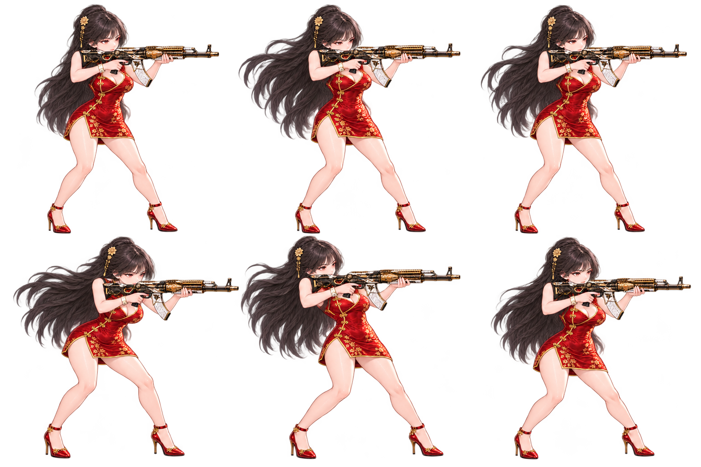
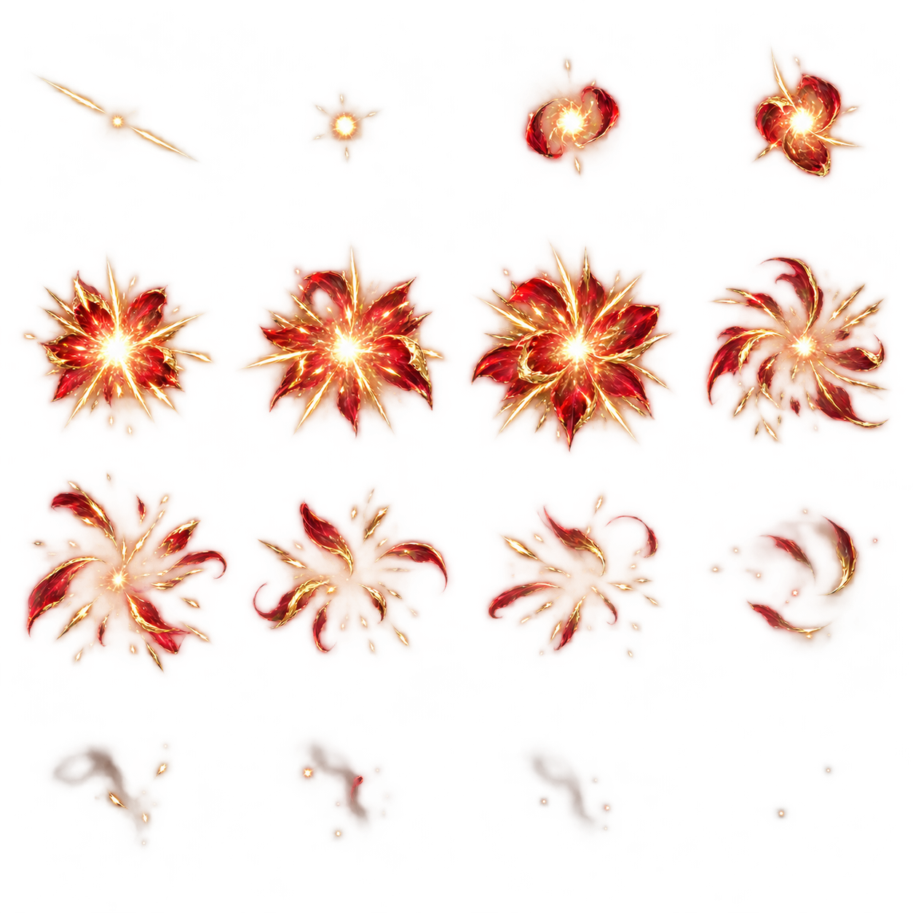

승인 원화 2026.09.19
SS · 중거리 사수
망이사
붉은 비단 위의 금빛 사선.
마지막 한 발에서 꽃이 핀다.
승인한 얼굴과 치파오, 화이트 골드 AK를 전투 SD에 담았습니다. 총구는 오른쪽 수평으로 정렬했습니다.
원화 승인이름 확정SS 등급 확정
금란 연사 재생하기 ↗전투 SD와 새 스킬 연출 검수본
BATTLE SPRITE
앞을 겨누는 조준 자세

WHITE & GOLD AK어깨에서 총구까지
어깨에서 총구까지
한 방향으로.
개머리판은 어깨에, 왼손은 총열덮개 아래에. 사격할 때도 같은 방향으로 반동과 복귀가 이어집니다.
6사격 동작 프레임16개화탄 이펙트 프레임
SIGNATURE SKILL
금란 연사
주 대상에게 빠르게 6연사합니다. 마지막 탄이 붉은 꽃잎과 금빛 파편으로 터져 주변 적 2명까지 타격합니다.
재생 대기
전투 시연 준비 중…
빠르게, 한 행동 안에서
별도 준비 턴이나 적의 체력 조건 없이 발사합니다. 앞선 탄이 빗나가도 후속탄을 쏩니다.
확산 피해도 정해진 범위로
기준안은 주 대상 320% + 주변 최대 2명 각 40%. 주변 대상이 없으면 남은 피해를 몰아주지 않습니다. PVP는 피해 예산의 82%를 적용합니다.
SS 등급에 맞춘 수치 시안
비용 25 · 재사용 5턴. 방어 무시·기절·추가 행동은 없습니다. 새 스킬의 수치와 연출은 검수 대상입니다.
연속 프레임 원본 보기

